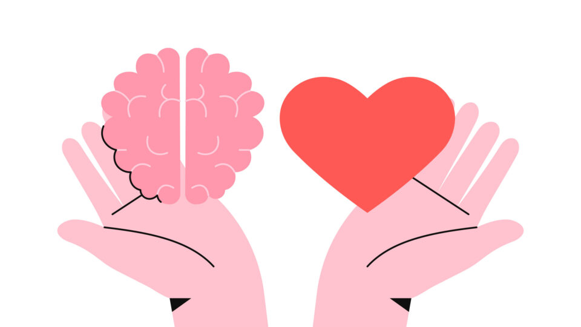
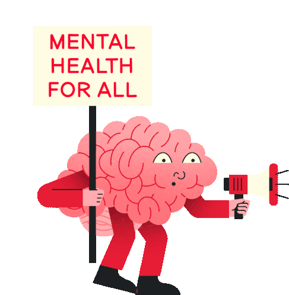

Aquí encontrarás información del área de psicología y pedagogía de la universidad como complemento para tener una salud integral al cursar en la universidad.
Sexualidad Responsable
Tener una sexualidad responsable: Un enfoque integral

Una sexualidad responsable implica tomar decisiones informadas y conscientes sobre tu vida sexual, considerando tu bienestar físico, emocional y social. Esto abarca aspectos como la salud sexual, la comunicación efectiva, el respeto a los demás y la toma de decisiones asertivas.
¿Qué puedes hacer para tener una sexualidad responsable?
1. Infórmate:
- Edúcate sobre sexualidad: Busca información confiable de fuentes oficiales como organizaciones de salud o instituciones educativas.
- Conoce tu cuerpo: Familiarízate con la anatomía y fisiología de tu cuerpo, tanto el tuyo como el de tu pareja.
- Comprende las infecciones de transmisión sexual (ITS) y el embarazo: Investiga sobre las diferentes ITS, sus métodos de transmisión, prevención y tratamiento. También infórmate sobre las opciones de anticonceptivos disponibles.
2. Comunícate:
- Dialoga con tu pareja: Habla abiertamente sobre tus deseos, necesidades, límites y expectativas en cuanto a la sexualidad.
- Expresa tu consentimiento: Asegúrate de obtener el consentimiento explícito de tu pareja antes de cualquier actividad sexual.
- Respeta las decisiones de los demás: No presiones a nadie a tener relaciones sexuales ni participes en actividades que no sean consensuadas.
3. Toma decisiones responsables:
- Utiliza métodos anticonceptivos: Si no deseas un embarazo, elige un método anticonceptivo eficaz y acorde a tus necesidades.
- Protégete de las ITS: Usa preservativos masculinos o femeninos en cada relación sexual para reducir el riesgo de contraer o transmitir infecciones.
- Realízate chequeos médicos regulares: Acude a tu médico para realizarte pruebas de detección de ITS y recibir asesoramiento sobre salud sexual.
4. Cuida tu salud física y emocional:
- Mantén un estilo de vida saludable: Lleva una dieta balanceada, realiza actividad física regular y duerme lo suficiente.
- Maneja el estrés: Encuentra mecanismos saludables para manejar el estrés, como yoga, meditación o técnicas de respiración.
- Busca ayuda si la necesitas: Si tienes dudas, inquietudes o problemas relacionados con tu sexualidad, no dudes en buscar ayuda profesional de un sexólogo o psicólogo.
Ejemplos de acciones para una sexualidad responsable:
- Hablar con tu pareja sobre tus preferencias sexuales y límites.
- Negociar el uso de métodos anticonceptivos y protección durante la actividad sexual.
- Realizarse pruebas de detección de ITS juntos antes de tener relaciones sexuales sin protección.
- Respetar las decisiones de tu pareja sobre su cuerpo y su vida sexual.
- Buscar ayuda profesional si experimentas dificultades en tu vida sexual o relaciones.
Recuerda que la sexualidad responsable es un proceso continuo de aprendizaje y crecimiento personal. No tengas miedo de hacer preguntas, explorar tus deseos y necesidades, y tomar decisiones informadas que te permitan disfrutar de una vida sexual plena y saludable.